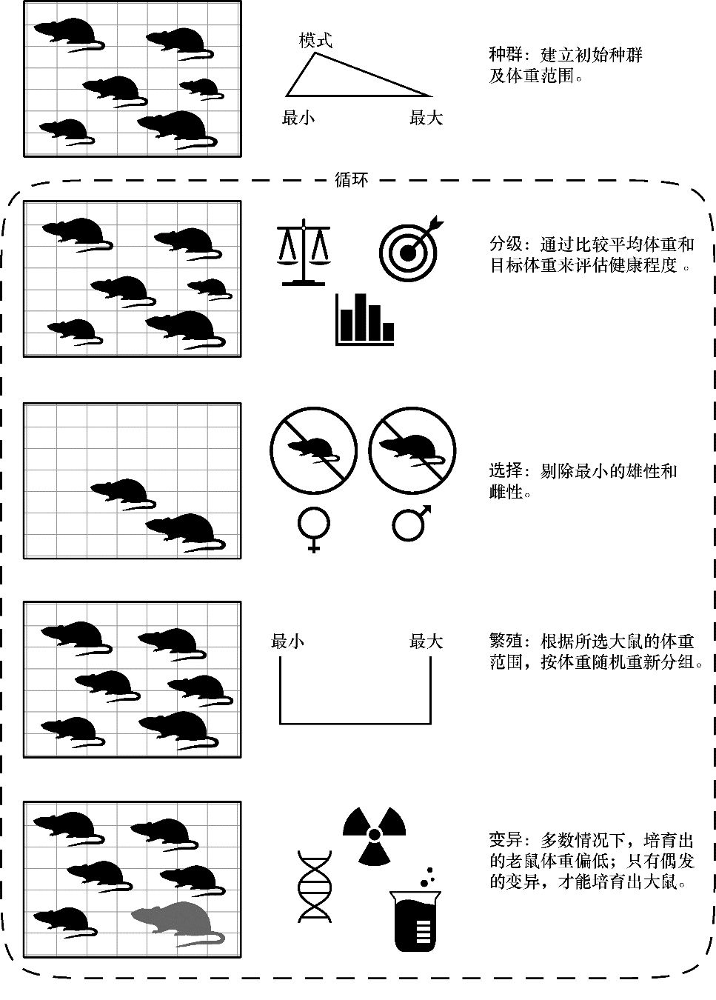

遗传算法是什么？基于Python
选自《Python 编程实战》（李·沃恩著）
遗传算法(Genetic Algorithm)是一种为解决复杂问题而设计的通用程序优化方法。遗传算法提出于 19 世纪 70 年代，属于进化类算法(Evolutionary Algorithm)。由于此类算法模拟了达尔文的自然选择过程，因此将它们命名为遗传算法。这些算法特别适用于对问题本身知之甚少或者问题属于非线性的情形，以及所处理的问题需要在巨大的搜索空间中执行暴力搜索情形。最为重要的是，遗传算法很容易理解和使用。
1.原理：在所有解中寻找最优解
遗传算法的优化意味着从一些可用的备选方案中选择最佳解决方案(在一些标准之下)。例如，如果你正在寻找一条从纽约到洛杉矶开车最快的路线，那么遗传算法永远不会建议你坐飞机。它只会从你提供的一组方案中选出最佳方案。遗传优化算法作为一种程序优化器，它比传统优化方法找到最优解的速度要快，而且可以避免过早地收敛于次优解的问题。换句话说，遗传优化算法既能有效地搜索解空间，也能全面搜索解空间，从而避免找到的解是次优解。
与纯暴力搜索方法不同，遗传算法并不会去尝试所有可能的解。相反，它们会不断地对解进行评分，然后根据评分做出"有根据的猜测"。游戏"变暖变冷(Warmer-Colder)"就是一个应用遗传算法的简单例子。当搜索一个隐藏起来的物品时，有人会根据你与物品的接近程度或与物品的偏离方向，告诉你将变暖或变冷。遗传算法使用一种类似于自然选择的适应度函数(Fitness Function)，抛弃"较冷"的解，在"较热"解的基础之上继续做选择。利用遗传算法寻找最优解的基本步骤如下。
(1)随机地生成大量解。
(2)测量每个解的适应度。
(3)选择最好的(最温暖的)解，抛弃其余的解。
(4)交叉或重新组合最优解中的元素，形成新的解。
(5)通过改变解中一小部分元素的值实现变异(Mutate)。
(6)返回第 2 步，重复执行此过程。
这个选择、交叉、变异的循环过程会一直持续下去，直到满足终止条件(Stop Condition)，例如找到一个已知的答案、找到一个"足够好"的答案(基于最小的阈值)、完成一定数量的迭代，或者达到时间截止期限。由于这些步骤与生物进化的过程中的优胜劣汰非常相似，因此遗传算法中的这些术语更多地来自生物学而非计算机科学。
2.项目：培养超级大鼠
目标
假如你的梦想是培育出一种体型如獒犬一样的老鼠(我们假定你已经疯了)。刚开始，你培育的对象是一只褐色鼠。然后，你会让老鼠食用一些人造甜味剂，再让它经历可怕的原子辐射。你还必须要有足够的耐心。另外，你还要懂一点 Python 编程方面的知识。然而，本项目不需要你懂得基因工程技术。这些老鼠的体重将从不足 1 磅增加到令人害怕的 110 磅(1 磅约为 450 克)，大约是一只雌性獒犬的体重。
策略
在开始做这个复杂的项目之前，用 Python 程序模拟结果是一个明智的决定。现在，你已经绘制了一些比项目计划更重要的东西——图形伪代码，如图所示。
使用遗传算法培育超级大鼠
图示的过程概述了遗传算法的工作原理。你的目标是培养出一群平均体重为 110 磅的老鼠，而这群老鼠最初的体重远低于这个数字。从长远来看，每一个种群(Population)或每一代的老鼠都是最终目标的备选解。像所有的动物饲养员一样，你会选出一部分雄性和雌性。然后，你会让剩下的老鼠交配，繁殖(Breed)下一代老鼠。这个过程在基因编程中称为交叉(Crossover)。
然而，剩余老鼠的后代在体型上基本与它们的父母一样大。因此，你需要让它们中的一些发生变异(Mutate)。虽然变异现象很少发生，而且通常产生的性状特征是介于中性到无益之间(就本项目而言，指的是体重偏低)。但是，偶尔你会成功地培育出一只大的老鼠。
无论是在实际存在的有机体中，还是在虚拟化的程序模拟体中，整个过程都是一个大的重复循环过程。无论如何，循环的终止条件都是老鼠长到所需大小，或者是你再也无法忍受与老鼠打交道了(即循环所花的时间过长)。
对于模拟的输入，你需要一些统计数据。你已经知道一头雌性牛头獒的平均质量是 50000g，下表为老鼠的一些统计数据。
| 参数 | 统计数据 |
|---|---|
| 最小体重 | 200g |
| 平均体重(雌性) | 250g |
| 平均体重(雄性) | 300～350g |
| 最大体重 | 600g |
| 每窝幼崽数 | 8～12 |
| 每年的产崽窝数 | 4～13 |
| 寿命(野生，圈养) | 1～3 年，4～6 年 |
由于圈养鼠和野生鼠的生活方式不同，因此上面的某些数据可能会有较大差异。圈养的老鼠会比野生的老鼠受到更多的照顾，所以它们的体重更重，繁殖的速度更快，而且每次繁殖的幼崽也较多。因此，在上表的数据范围中，在实验时你可以选用这些数据的上界。对于这个项目，我们使用的数据选自表中所示的各项假设值。
向遗传算法中输入的参数值：
| 变量及其值 | 备注 |
|---|---|
| GOAL = 50000 | 目标体重(雌性牛头獒体重，单位：g) |
| NUM_RATS = 20 | 实验所能支持培养的最多老鼠数量 |
| INITIAL_MIN_WT = 200 | 初始种群中成年大鼠的最小质量(单位：g) |
| INITIAL_MAX_WT = 600 | 初始种群中成年大鼠的最大质量(单位：g) |
| INITIAL_MODE_WT = 300 | 初始种群中最常见的成年大鼠体重(单位：g) |
| MUTATE_ODDS = 0.01 | 大鼠发生突变的概率 |
| MUTATE_MIN = 0.5 | 老鼠发生最小有益突变的体重标量 |
| MUTATE_MAX = 1.2 | 老鼠发生最大有益突变的体重标量 |
| LITTER_SIZE = 8 | 每对大鼠交配后产的幼崽数量 |
| LITTERS_PER_YEAR = 10 | 每对大鼠每年交配产崽的窝数 |
| GENERATION_LIMIT = 500 | 达到老鼠种群的繁殖代数上限，终止程序 |
由于老鼠繁殖迅速，因此你不必考虑它们的寿命。即使保留了上一代老鼠的父母，它们也会随着下一代体重的快速增加而被淘汰。
代码
1．输入假设数据
在清单 7-1 中，程序首先在全局代码空间中导入一些所需的模块，将表 7-2 中的一些统计数据、标量和假设因素定义为常量并进行赋值。当程序代码书写完毕并运行后，你就可以随意地试验参数表中的数据，观察这些参数如何影响结果。
清单 7-1 导入模块和给常量赋值
# super_rats.py，第 1 部分
➊import time
import random
import statistics
➋ # 这些常量的单位均为 g
➌ GOAL = 50000
NUM_RATS = 20
INITIAL_MIN_WT = 200
INITIAL_MAX_WT = 600
INITIAL_MODE_WT = 300
MUTATE_ODDS = 0.01
MUTATE_MIN = 0.5
MUTATE_MAX = 1.2
LITTER_SIZE = 8
LITTERS_PER_YEAR = 10
GENERATION_LIMIT = 500
# 为了让老鼠成对存在，确保其总数是偶数：
➍ if NUM_RATS % 2 != 0:
NUM_RATS += 1
在清单 7-1 的开头部分，先导入程序所需的 time、random 和 statistics 模块 ➊。你将使用 time 模块记录遗传算法的运行时间。这是一件非常有趣的事情，它会让你对遗传算法找到一个解的速度感到震惊。
random 模块可以满足遗传算法对数据随机选取的要求，statistics 模块用于计算平均值。虽然程序只是简单地用到 statistics 模块的一些功能，但是我希望让你对它进行更深入的了解。它真的是一个很好用的模块。
接下来，根据表 7-2 所示的数据为输入变量赋值，确保它们的单位都是 g，➋。由于这些变量表示常量，因此用大写字母命名它们 ➌。
紧接着，程序进入老鼠繁殖配对模拟环节。因此，需要检查用户输入的老鼠总数是否为偶数。如果不是偶数，则将老鼠总数变量值加 1，➍。稍后，你会在 7.6 节的实验中使用其他类型的老鼠性别分布。
2．初始化种群
清单 7-2 用程序模拟购买老鼠的过程。我们进入一家宠物店，挑选出一些老鼠作为最初的繁殖群体。因为想让这些老鼠成对存在，所以选择的老鼠总数应该为偶数。然而，因为你购买不起空间巨大、形状奇特的火山形老鼠巢穴，所以你需要假定在每一代老鼠群体中，成年老鼠的数量总是保持不变——为了容纳下幼崽，允许数量暂时性增加。切记，当老鼠长成与大狗一样大时，它们会需要更大的空间。
清单 7-2 定义初始化老鼠种群的函数
# super_rats.py，第 2 部分
➊ def populate(num_rats, min_wt, max_wt, mode_wt):
"""用体重的三角分布初始化种群。"""
➋ return [int(random.triangular(min_wt， max_wt， mode_wt))\
for i in range(num_rats)]
在清单 7-2 中，函数 populate() 的参数依次是：你希望的成年老鼠数量、老鼠的最大体重和最小体重以及常见体重 ➊。需要注意的是，函数的所有参数都来自全局代码空间中定义的常量。为了访问这些常量，你不用将它们当作函数参数。考虑到程序的简洁性和局部变量访问的高效性，这里和后面定义的函数中还是将这些常量当作函数参数。
在 random 模块中会用到上述 4 个参数，它们可用于创建不同类型的统计分布。在这里我们使用的是三角分布，该分布可以很好地控制最小值和最大值，还可以让我们对统计数据中的偏差进行建模。
对于棕色老鼠，它们既能生存在野外，也能被圈养在动物园、实验室和家里。由于野生环境肮脏简陋，因此这种环境下老鼠的体型往往很小。而在实验室里的老鼠生活环境要好一点，所以它们的体型也偏大。利用列表推导方法循环遍历每一只老鼠，并为每只老鼠随机分配一个体重。同时，将该操作放在 return 语句处 ➋。
3．测量种群的适应度
测量老鼠种群的适应度分为两步。首先，比较所有老鼠的平均体重与目标雌性牛头獒的体重，对整个种群进行打分。然后，给种群内的每只老鼠打分。要求只有体重在 n% 以上的大鼠(取决于变量 NUM_RATS 的值)才能再次繁殖。虽然种群的平均体重只是一个适应度的有效性度量，但它在这里的另一个作用是确定我们是否可以终止循环，宣告成功。
清单 7-3 将定义函数 fitness() 和函数 select()，它们共同实现测量遗传算法适应度的功能。
清单 7-3 定义遗传算法的适应度测试函数
# super_rats.py，第 3 部分
➊ def fitness(population, goal):
"""根据种群成员体重的平均值与目标值，测量种群的适应度。"""
ave = statistics.mean(population)
return ave / goal
➋ def select(population， to_retain):
"""为了让种群只包含指定数量的成员，有选择性地去除一些个体。"""
➌ sorted_population = sorted(population)
➍ to_retain_by_sex = to_retain//2
➎ members_per_sex = len(sorted_population)//2
➏ females = sorted_population[:members_per_sex]
males = sorted_population[members_per_sex:]
➐ selected_females = females[-to_retain_by_sex:]
selected_males = males[-to_retain_by_sex:]
➑ return selected_males， selected_females
在清单 7-3 中，首先定义一个能够对当前代种群适应度打分的函数 ➊。在该函数内部，使用 statistics 模块的 mean() 函数计算种群的平均值，返回该值除以目标体重的结果。当此值等于或大于 1 时，让种群停止繁殖。
接下来，定义一个根据大鼠体重将种群数量剔除至 NUM_RATS 只的函数，在这里函数通过参数 to_retain 获得变量 NUM_RATS 的值 ➋。该函数的另一个参数 population 表示下一代种群的父母。
然后，对种群中的成员按体重进行排序，这样就可以将体重大的和体重小的老鼠区分开 ➌。为了得到一个整数，将你想要保留的老鼠的数量向下除以 2 取整 ➍。这一步操作会保留体重最大的雌性和雄性大鼠。如果你只选择种群中体重最大的老鼠，理论上只能选择到雄性。再一次利用向下取整除法，将 sorted_population 的值除以 2，得到现有种群中每种性别的成员数 ➎。
雄性老鼠往往比雌性老鼠大，因此我们做出如下两个简化的假设：首先，假设恰好有一半的种群成员是雌性；其次，最大的雌性大鼠不会超过最小的雄性大鼠的体重。这意味着排序后的种群列表的前一半代表雌性，后一半代表雄性。然后，将 sorted_population 分成两半，分别创建两个新列表，雌性群体位于列表的下半部分 ➏，雄性群体位于列表的上半部分。现在，剩下要做的就是使用负向切片方式从每个列表的末尾取出体重最大的老鼠 ➐。最后，函数返回取出的老鼠 ➑。函数返回的这两个列表分别为下一代种群的父亲和母亲。
由于老鼠的初始数量等于 NUM_RATS 常量，因此第一次运行这个函数时，它所做的就是按性别对老鼠排序。接下来的种群总数将超过变量 NUM_RATS 的值，它包括父母一代和孩子一代。
4．繁殖新一代
清单 7-4 定义程序中的"交叉"步骤，它表示繁殖出新一代的个体。一个关键性的假设是：每只子代老鼠的体重都将大于或等于其母亲的体重，而小于或等于其父亲的体重。该假设的例外情况将在"变异"函数中进行处理。
清单 7-4 定义繁殖新一代老鼠的函数
# super_rats.py，第 4 部分
➊ def breed(males, females, litter_size):
"""在不同体重的成员之间交叉基因。"""
➋ random.shuffle(males)
random.shuffle(females)
➌ children = []
➍ for male， female in zip(males， females):
➎ for child in range(litter_size):
➏ child = random.randint(female， male)
➐ children.append(child)
➑ return children
清单 7-4 定义了一个名为 breed() 的函数，该函数有 3 个参数，它们分别是 select() 函数返回的已选雄性和雌性老鼠的各自体重列表、每窝后代的数量 ➊。由于在函数 select() 中对它们进行了排序，为了避免最小的雄性老鼠与最小的雌性老鼠配对，你需要随机地把这两个列表打乱 ➋。
接下来，创建一个放置下一代群体的空列表 ➌。利用函数 zip() 遍历已打乱的表示雄性和雌性体重的列表对，并将这两个列表中的对应元素进行配对 ➍。由于每对老鼠可能会有多个子女，因此程序将产崽数作为另一个新创建的循环的循环终止条件 ➎。产崽数是一个名为 litter_size 的常量，这个常量定义于输入参数代码区。如果这个数字是 8，那么每对老鼠就会生下 8 只小老鼠。
对于每只新生的小老鼠，它的体重都是一个位于母亲和父亲体重范围之间的随机值 ➏。需要注意的是，函数 randint() 会使用所提供参数范围内的每一个数字，因此你没必要在 randint() 函数中使用 male+1。同时，还要注意的是，randint() 函数的这两个参数可以相同，但是第一个值(母亲的体重)不能大于第二个值(父亲的体重)。这是我们在本项目中假设体重最大的雌性不能超过体重最小的雄性的体重的另一个原因。在循环体的末尾，将新生的每只小老鼠的体重值添加到列表 children 中 ➐。最后，该函数返回列表 children➑。
5．种群变异
新生老鼠中的一小部分应该会发生变异，而这些突变个体中的大多数所产生的性状特征都是无益的。这意味着新产生幼崽的体重将会低于预期，这些幼崽中还包括那些无法存活的"小个体"。但是，少见的有益突变会产生体重更重的老鼠。
清单 7-5 定义函数 mutate()，该函数将把你在全局代码编辑区定义的那些与变异假设有关的常量当作参数。当函数 mutate() 被调用后，程序就开始检查新种群的适应度。如果此时仍然没有达到目标体重，那么程序就再次进入循环。
清单 7-5 定义使种群中少部分个体发生变异的函数
# super_rats.py，第 5 部分
➊ def mutate(children, mutate_odds, mutate_min, mutate_max):
"""根据输入的老鼠变异概率值和体重变化范围，随机地改变大鼠的体重。"""
➋ for index， rat in enumerate(children):
if mutate_odds >= random.random():
➌children[index] = round(rat * random.uniform(mutate_min，
mutate_max))
return children
清单 7-5 定义的函数 mutate() 有 4 个参数，它们分别是存储老鼠幼崽群体的列表、变异发生的概率以及变异产生的最大和最小影响 ➊。这些影响参数均是一些标量值，你可以将它们用于改变老鼠的体重。这些与突变有关的常量都位于程序开头的全局代码编辑区，由于大多数突变不会产生有益的性状特征，因此它们倾向于取影响范围内的标量较小值。
在该函数内部，使用函数 enumerate() 循环遍历保存老鼠后代的列表 children。函数 enumerate() 是一个方便易用的内置函数，通过它的自动计数器，可以获取数据的索引值 ➋。然后，使用 random() 函数来生成一个 0 到 1 之间的数字，并将这个数字与变异发生的概率进行对比。
如果变量 mutate_odds 的值大于或等于随机生成的数字，那么就认为这个索引值对应的老鼠会发生变异。从定义的最小和最大突变值之间均匀地选择一个突变值，这等同于从最大值和最小值表示的范围内随机地选取一个值。当这些数值趋近于最小值时，老鼠变异后的结果可能是体重减轻而不是增加。将当前体重乘以这个突变标量值，并将其四舍五入为整数 ➌。最终，函数返回变异后的老鼠幼崽列表 children。
注意
突变的有效性研究结果表明，有益的突变是非常罕见的，但一些其他的研究结果表明这种现象比我们想象到的要普遍。狗的繁育结果已经表明，不必花费数百万年的时间，它们就能在体型上发生巨大的变化(例如，吉娃娃和大丹犬)。在 20 世纪的一项著名研究中，遗传学家德米特里 • 别列耶夫以 130 只银狐为研究对象，他挑选每代银狐中最温顺的个体，经过 40 年时间的演化，最终培育出的银狐在生理结构上发生了显著的变化。
6．定义 main() 函数
清单 7-6 定义程序的 main() 函数，它的功能是管理其他函数，确定程序何时满足终止条件。此外，在该函数中还会显示一系列重要的计算结果。
清单 7-6 定义 main() 函数
# super_rats.py，第 6 部分
def main():
"""该函数的功能是模拟种群的初始化、筛选、繁殖和突变过程，输出这些数据结果。"""
➊ generations = 0
➋ parents = populate(NUM_RATS， INITIAL_MIN_WT， INITIAL_MAX_WT，
INITIAL_MODE_WT)
print("initial population weights = {}".format(parents))
popl_fitness = fitness(parents， GOAL)
print("initial population fitness = {}".format(popl_fitness))
print("number to retain = {}".format(NUM_RATS))
➌ ave_wt = []
➍ while popl_fitness < 1 and generations < GENERATION_LIMIT:
selected_males， selected_females = select(parents， NUM_RATS)
children = breed(selected_males， selected_females， LITTER_SIZE)
children = mutate(children， MUTATE_ODDS， MUTATE_MIN， MUTATE_MAX)
➎ parents = selected_males + selected_females + children
popl_fitness = fitness(parents， GOAL)
➏ print("Generation {} fitness = {:.4f}".format(generations，
popl_fitness))
➐ ave_wt.append(int(statistics.mean(parents)))
generations += 1
➑ print("average weight per generation = {}".format(ave_wt))
print("\nnumber of generations = {}".format(generations))
print("number of years = {}".format(int(generations / LITTERS_PER_YEAR)))
清单 7-6 中，首先在 main() 函数中初始化一个保存繁殖代数的变量。最终，根据这个值，你能计算出令人满意的老鼠体重需要耗费多少年 ➊。
接下来，调用函数 populate()➋，并立即输出该函数的返回结果。然后，获取初始种群的适应度，把该值和每代老鼠的数量(常量 NUM_RATS 的值)一起输出出来。
出于乐趣性考虑，同时也为了你能在程序结束后查看到每代老鼠的平均体重，在程序中初始化一个保存老鼠体重数据的空列表 ➌。如果以年为单位，将这些体重值描在坐标轴上，你就会发现它们的体重呈指数增长。
然后，程序进入选择、繁殖、突变过程的大循环。这是一个 while 循环，该循环终止的条件是达到目标体重值，或者未达到目标体重值但种群数量已足够庞大 ➍。需要注意的是，当子代完成突变后，你需要创建一个新的列表 parents，将子代连同它们的父母一起保存到这个列表中 ➎。虽然在现实中从发生突变到开始繁殖下一代可能需要经过五周的时间，但是你可以通过减小常量 LITTERS_PER_YEAR 的值(见表 7-1)来解决这一问题。
为了监控算法的行为及确认算法的运行结果能否如预期那样，每次循环结束时，程序都会显示函数 fitness() 的返回结果，并将该结果保留至小数点后 4 位 ➏。然后，得到本代老鼠的平均体重，将该值添加到列表 ave_wt➐。在循环体的最后，将变量 generations 的值加 1。
最后，在 main() 函数中输出显示一些统计信息，如每代老鼠的平均体重、总共繁殖的代数以及花费的年数，其中年数是用变量 generations 和变量 LITTERS_PER_YEAR 的值相除得到的 ➑。
7．运行 main() 函数
在本程序的最后，利用你已熟悉的条件语句结束程序。这个语句使该程序既可以独立运行，也可以作为模块导入另一个程序。然后，程序获取 main() 函数的开始和结束时间，并输出运行 main() 函数所花费的时间。只有当程序独立运行时，它才会输出计算的性能信息。因此，你一定要将这些语句放置到 if 条件子句内，如清单 7-7 所示。
清单 7-7 当该程序不是另一个程序的导入模块时，执行 main() 函数和 time 模块
# super_rats.py，第 7 部分
if __name__ == '__main__':
start_time = time.time()
main()
end_time = time.time()
duration = end_time - start_time
print("\nRuntime for this program was {} seconds.".format(duration))
项目小结
当根据表格 7-2 中的参数执行程序时，程序* super_rats.py* 花费的时间大约为两秒。为了达到 110 磅的目标体重，老鼠大概需要繁殖 345 代，或者说花费 34.5 年。这么长的一段时间足以让科学家等待到发疯。但是通过模拟程序，你就可以缩短老鼠达到目标体重所耗费的时间。
敏感性分析(Sensitivity Study)是指通过多次改变单个变量的值产生实验结果，根据实验结果对事件发展做出预测。你还需要注意某些变量之间存在的相互依赖关系。由于统计结果是随机的，因此针对不同的参数，你需要进行多次测试，这样才能得到所有可能的输出结果。
在模拟老鼠繁殖的程序中，你可以控制两件事：新繁殖的老鼠数量(NUM_RATS)和变异发生的概率(MUTATE_ODDS)。变异概率受饮食习惯和放射性辐射的影响。如果每次只改变一个变量的值，并重新运行程序 * super_rats.py* ，那么你就可以判断每个变量对老鼠繁殖和变异的影响。
一个显而易见的观察结果是：如果每个变量都从较小值开始，然后缓慢地增加，那么得到的初始结果会发生急剧的变化，如图 7-3 所示。这两条曲线都迅速下降并趋于平缓，这是一个收益递减的经典例子。每条曲线变平的地方就是收益递减点，即省钱和减少工作量的关键点。
例如，当保留的老鼠数量超过 300 只时，你只能获得微小的收益。此时，你只是在喂养和照顾一大堆多余的老鼠。同样地，当将变异的概率调高至 0.3 时，你也获得不了多少收益。
当有这些图表后，你就很容易规划前进的道路。水平的标有"基准线"的点线表示使用表 7-2 中的参数产生的平均结果。通过将保留的老鼠数量从 20 只增加至 50 只，你就可以把老鼠达到目标体重花费的时间减少 10 年以上。你还应该关注增加有益变异的数量对培育老鼠产生的影响。这会提高你的回报率，但也会使你面临的风险更大，并使过程更难控制。
图 7-3 两种参数变化对老鼠达到目标体重所花费时间的影响
如果每次保留 50 只老鼠，同时将变异概率提高至 0.05，重新运行这个模拟程序，那么理论上达到老鼠目标体重花费的时间会变成 14 年，优化效果会达到初始基准的 2.46 倍。这就是优化产生的效果。
繁殖超级大鼠是一种理解遗传算法的简单有趣的方式。但是要真正体会到它们的用处，你需要尝试解决一些更困难的问题。对这样的问题，你可能需要采取暴力搜索的方法，但是这类问题太过复杂，以至于通过暴力搜索很难解决。接下来的一个项目就属于这种问题。
3.项目：破解高科技保险柜
目标
现在，假如你的名字叫 Q。这时候詹姆斯 · 邦德遇到了一个问题：他必须到一个恶人的宅邸参加一场高级的舞会，其间需要溜进恶人的私人办公室，破解墙上的保险柜。这宛如电影《007》中的情节，但有一样东西与电影《007》中不同：保险柜是 Humperdink BR549 数字型的，它的密码有 10 位数字，而 10 位数字有多达 100 亿种可能的组合。当所有数字输入正确后，保险柜锁轮才开始转动。在这种情况下，将听诊器放在保险柜旁并慢慢地转动表盘并成功开锁是不现实的事。
作为故事情节中的 Q，你已经拥有通过暴力穷举遍历所有密码的自动拨号装置，但在那种情况下，你根本没有时间使用它。这就是当前的问题所在。
按照排列的定义：数字有序的组合就是排列。而组合锁对数字的顺序是有要求的，因此这样的组合锁实际上应称作排列锁。更具体地说，这种锁允许有重排列。例如，数字 999999999，尽管这不是一串安全的密码数字，但它是一个有效的密码数字组合。
在第 3 章和第 4 章中，你都使用过 itertools 模块中的 permutation() 迭代器，但是它只能返回元素的无重排列，因此对于本项目，它无法发挥作用。为了生成该锁的密码的正确排列结果，你需要使用 itertools 模块的 product() 迭代器，这个迭代器会生成多个数集的笛卡儿积：
>>> from itertools import product
>>> combo = (1, 2)
>>> for perm in product(combo, repeat=2):
print(perm)
(1, 1)
(1, 2)
(2, 1)
(2, 2)
函数 product() 的可选 repeat 关键字参数允许你用一个可迭代变量乘以它自身来得到它的笛卡儿积。对于破解锁的密码，你也需要这样做。需要注意的是，product() 函数会返回数字的所有可能组合，而 permutations()函数返回的结果只有 (1,2) 和(2,1)。在 Python 的官方网站上，你可以找到更多关于 product() 函数的资料。
清单 7-8 定义一个名为 brute_force_cracker.py 的程序，它使用 product() 函数，并通过暴力穷举的方式获得数字的正确组合。
清单 7-8 利用暴力穷举方法找到保险柜的密码组合
brute_force_cracker.py
➊ import time
from itertools import product
start_time = time.time()
➋ combo = (9, 9, 7, 6, 5, 4, 3)
# 用笛卡儿积生成数字的有重排列
➌ for perm in product([0, 1, 2, 3, 4, 5, 6, 7, 8, 9], repeat=len(combo)):
➍ if perm == combo:
print("Cracked！ {} {}".format(combo， perm))
end_time = time.time()
➎ print("\nRuntime for this program was {} seconds.".format
(end_time-start_time))
在清单 7-8 中，首先导入 time 模块和 itertools 模块中的 product 迭代器 ➊。然后，记录程序开始运行时的时间。以元组的形式保存保险柜的密码 ➋。之后，程序调用 product() 函数，它会以元组的形式返回给定序列的有重排列，其中包含了全部有效的单个数字(0～9)。你应该将 repeat 参数的值设置为组合中数字的数量 ➌。将产生的每个组合结果与用户输入的密码组合进行比较，如果两者相匹配，就输出字符串"Cracked!"及用户输入的密码组合和与之相匹配的组合 ➍。最后，输出显示程序的运行时间 ➎。
这对长达 8 位的数字组合也非常有效。在那种情况下，程序的运行时间会明显变长。表 7-3 记录了程序的运行时间与组合中的数字位数之间的关系。
表 7-3 程序的运行时间与组合中的数字位数之间的关系(处理器为 2.3GHz)
| 数字位数 | 运行时间(秒) |
|---|---|
| 5 | 0.035 |
| 6 | 0.147 |
| 7 | 1.335 |
| 8 | 12.811 |
| 9 | 133.270 |
| 10 | 1396.955 |
需要注意的是，每向组合中添加一位数字，程序的运行时间就会增加一个数量级。你还可以发现，数字的排列总数呈指数增长。如果计算的是 9 位数的组合，你要等两分钟才能得到正确组合；如果计算的是 10 位数的组合，你等待的时间会超过 20 分钟。对于邦德来说，他需要花费很长一段时间才能破解保险柜的密码。
幸运的是，你是知道遗传算法的 Q。你需要做的就是找到一些判断每个候选组合适应度的方法。这些方法的功能包括监视功耗波动、测量操作中的时间延迟以及探听特殊声音。假设，我们在破解保险柜密码的过程中用到声音放大工具，以及防止因错误输入而使保险柜锁定的工具。由于 BR549 保险柜具有安全保护措施，因此声音工具最初只能告诉你密码的正确位数，而不能告诉你哪个数字是正确的。不过，这会使你的遗传算法在寻找正确的数字组合时花费更少的时间。
策略
在本项目中，我们使用的策略简单且直观。首先，你会随机地生成一个包含 10 个数字的序列。然后，将这个序列与真实的密码组合做比较，并根据它们的匹配情况为这个序列打分；在现实世界中，为了找到匹配的数字，你还要将声音探测器固定在保险柜门上。之后，你会更换组合中的一个数字，并再次将它与密码组合做比较。如果又找到一位匹配的数字，你就会抛弃旧的序列，生成新的序列，重复前面所述的过程；否则，你会保留旧序列，然后继续尝试。
由于用某个解完全替代另一个解表示遗传物质的 100% 交叉，因此从本质上来讲，你只需用到遗传算法中的选择和变异。选择和变异的过程共同构成一个健壮的爬山算法(Hill-Climbing Algorithm)。爬山算法是一种优化技术，它从一个任意的解开始，然后改变(变异)解中的一个值。如果得到的结果有所改善，就保留新的解并重复该过程。
爬山算法的问题在于，它容易产生局部极小解或极大解，从而导致无法找到全局最优解。想象一下，你正在图 7-4 所示的波动函数中寻找最小值。当前，猜测到的最小值是图中黑点所标记的位置。如果你对所选解的改变(变异)程度太小，那么它就无法"逃离"局部低谷点，算法将找不到真正的最小值。但从算法的角度来看，由于该点周围其他方向产生的解均非最小值，因此它会认为找到的一定是最小值。这个现象称作过早地收敛于某个解。
图 7-4 爬山算法产生局部最小值解的示例
在遗传算法中，交叉允许发生相对较大的突变，它有助于避免过早收敛的问题。因为在这里不用担心生物中的现实问题，所以你可以让突变空间包含组合中的所有可能值。这样一来，你就不必担心算法产生的结果是局部最优解，因此爬山算法就变成一种可以接受的方法。
代码
程序_safe_cracker.py_以多位数字的组合为输入，使用爬山算法从一个随机点开始，直至得到预期的数字组合结果为止。从本书的配套资源中可以下载到该程序。
1．定义 fitness()函数
清单 7-9 中的代码功能是：导入程序必需的模块，定义函数 fitness()。
清单 7-9 导入程序所需模块及定义 fitness()函数
# safe_cracker.py，第 1 部分
➊ import time
from random import randint， randrange
➋ def fitness(combo, attempt):
"""比较两个列表中对应索引的值，并统计它们含有相等元素的个数。"""
grade = 0
➌ for i， j in zip(combo， attempt):
if i == j:
grade += 1
return grade
在清单 7-9 中，首先导入一些你已经熟悉的模块 ➊。然后，定义一个以数字的真实组合和尝试组合为参数的函数 ➋。在 fitness()函数的内部，先定义一个名为 grade 的变量，并将它的值设置为 0。紧接着，使用 zip()函数在循环中遍历真实组合列表和尝试组合列表中的每个元素 ➌。如果这两个列表中相同索引对应的元素相等，就将 grade 变量的值加 1。最后，函数会返回变量 grade。需要注意的是，函数只是找到了匹配的索引，并没有记录匹配的索引值。这个函数的作用就是模拟声音检测设备及获得其输出。不过，这只能让你知道有多少个锁轮转动，而你还不能确定它们的具体位置。
2．定义并运行 main()函数
这个程序代码量少且逻辑简单，因此与将程序的代码定义在多个函数中的方式不同，本程序的大多数代码都写在 main()函数内，如清单 7-10 所示。
清单 7-10 定义并运行 main()函数，没有导入其他模块时，记录程序运行时间
# safe_cracker.py，第 2 部分
def main():
"""利用爬山算法解决求保险柜密码组合问题。"""
➊ combination = 『6822858902』
print("Combination = {}".format(combination))
# 将字符串型的数字组合转换成列表：
➋ combo = [int(i) for i in combination]
# 针对该组合生成尝试组合，并为生成组合的适应度打分:
➌ best_attempt = [0] * len(combo)
best_attempt_grade = fitness(combo， best_attempt)
➍ count = 0
# 使尝试组合发生进化
➎ while best_attempt ！= combo:
# 交叉
➏ next_try = best_attempt[:]
# 变异
lock_wheel = int(randrange(0， len(combo)))
➐ next_try[lock_wheel] = randint(0， len(combo)−1)
# 打分并选择
➑ next_try_grade = fitness(combo， next_try)
if next_try_grade > best_attempt_grade:
best_attempt = next_try[:]
best_attempt_grade = next_try_grade
print(next_try， best_attempt)
count += 1
print()
➒ print("Cracked！ {}".format(best_attempt)， end=『 』)
print("in {} tries！".format(count))
if __name__ == 『__main__』:
start_time = time.time()
main()
end_time = time.time()
duration = end_time - start_time
➓ print("\nRuntime for this program was {:.5f} seconds.".format(duration))
在清单 7-10 中，先用一个变量表示真实的数字组合 ➊。为了方便执行程序的后续操作，使用列表推导方法将该组合转换成一个列表 ➋。然后，生成一个值为全零的、长度与真实数字组合相等的列表，将该列表命名为 best_attempt➌。此时，任何组合对问题最终的解来说都同等程度地好。由于在解决这个问题时，你只需要保留最好的解，因此你应该在程序中保留这个变量名—— best_attempt。当生成初始尝试组合后，使用 fitness()函数为其打分。然后，将该值赋给一个名为 best_attempt_grade 的变量。
接下来，创建一个名为 count 的变量。程序将使用此变量记录成功破解密码过程中尝试的总次数 ➍。
然后，程序进入 while 循环，直到找到的组合与真实组合相同为止 ➎。在循环体内，先将变量 best_attempt 的副本分配给变量 next_try➏。这主要是为了避免变量别名问题。由于变量 next_try 在未通过最佳适应性测试的情况下，程序还要继续使用变量 best_attempt，因此当改变变量 next_try 中的元素时，不能意外地引起变量 best_attempt 值的更改。接下来，程序模拟使变量 next_try 表示的组合发生"变异"的过程。因为组合中的每个数字都会转动保险柜中的锁轮，所以定义一个名为 lock_wheel 的变量，并将它的值随机地设置为尝试组合中某位置的索引值。变量 lock_wheel 的值表示在本次迭代中要改变的元素的位置。之后，随机选择一个数字，并用它替换 lock_wheel 索引位置上的值 ➐。
之后，程序给变量 next_try 表示的组合打分。如果本组合得到的适应度评分更高，那么就重置变量 best_attempt 和变量 best_attempt_grade 的值 ➑。否则，在本轮迭代中，让变量 best_attempt 保持不变。为了在程序结束时回滚查看组合的演变过程，在同一行上输出变量 next_try 和变量 best_attempt。在循环的末尾，将表示猜测组合的计数器值加 1。
当程序找到最佳组合时，显示变量 best_attempt 的值和找到最佳组合时尝试的总次数 ➒。需要注意的是，print()函数的 end=『 』参数会在当前行的结尾和下一行的开头之间放置一个空格，以防止输出时行尾出现换行。
最后，使用条件语句使 main()函数仅可在独立模块中运行。同时，显示程序运行的时间，并将其精确到小数点后 5 位 ➓。需要注意的是，程序的计时代码位于条件语句块内，因此当程序作为模块导入其他程序时，程序不会运行。
4.小结
下面是程序 safe_cracker.py 最后几行的输出结果。为了简洁起见，这里省略了大部分的组合。本次运行程序时，使用的数字有 10 位：
[6, 8, 6, 2, 0, 5, 8, 9, 0, 0] [6, 8, 2, 2, 0, 5, 8, 9, 0, 0]
[6, 8, 2, 2, 0, 9, 8, 9, 0, 0] [6, 8, 2, 2, 0, 5, 8, 9, 0, 0]
[6, 8, 2, 2, 8, 5, 8, 9, 0, 0] [6, 8, 2, 2, 8, 5, 8, 9, 0, 0]
[6, 8, 2, 2, 8, 5, 8, 9, 0, 2] [6, 8, 2, 2, 8, 5, 8, 9, 0, 2]
Cracked! [6, 8, 2, 2, 8, 5, 8, 9, 0, 2] in 78 tries!
Runtime for this program was 0.69172 seconds.
10 位数可能的组合有数百亿种，但该程序仅进行 78 次尝试就找到正确的组合，而且花费的时间不到一秒。
这就是遗传算法的价值。在本章中，你先按照工作流程图编写了繁殖巨大老鼠的程序。然后，为了立即解决暴力穷举搜索问题，你尝试对遗传算法进行修改，从而避免在爬山算法使用过程中遇到的问题。
如果想继续体验数字达尔文游戏，尝试遗传算法实验，你可以在维基百科上找到很多与之相关的应用示例，其中的一些应用示例如下。
-
模拟全球温度变化。
-
集装箱装载优化。
-
送货车辆路线优化。
-
地下水监测网。
-
机器人行为学习。
-
蛋白质折叠。
-
罕见事件分析。
-
密码破解。
-
聚类分析。
-
滤波与信号处理。